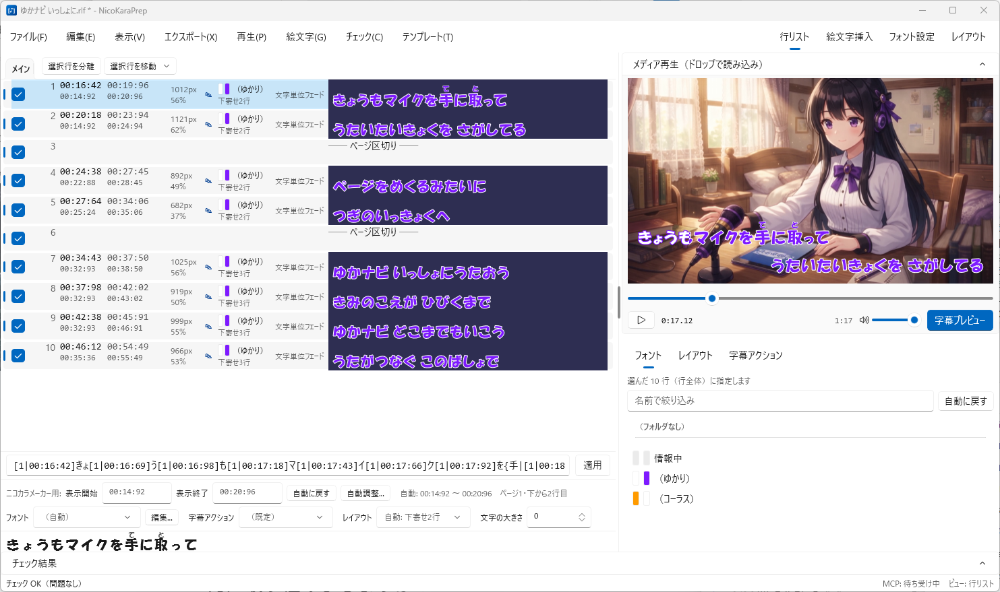
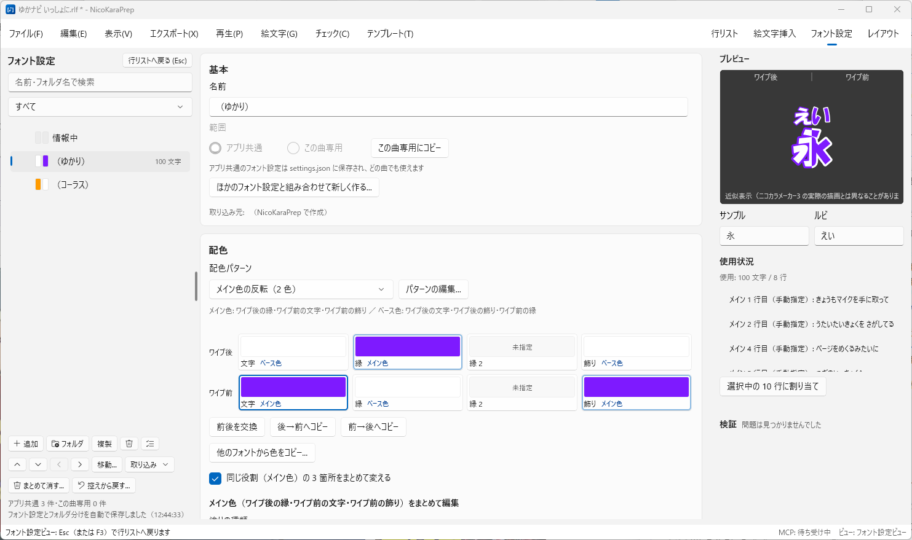
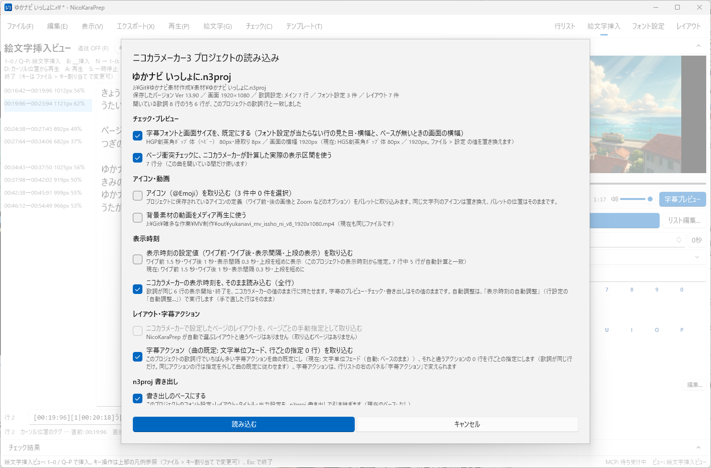
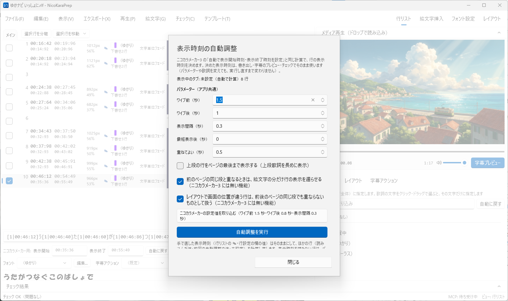
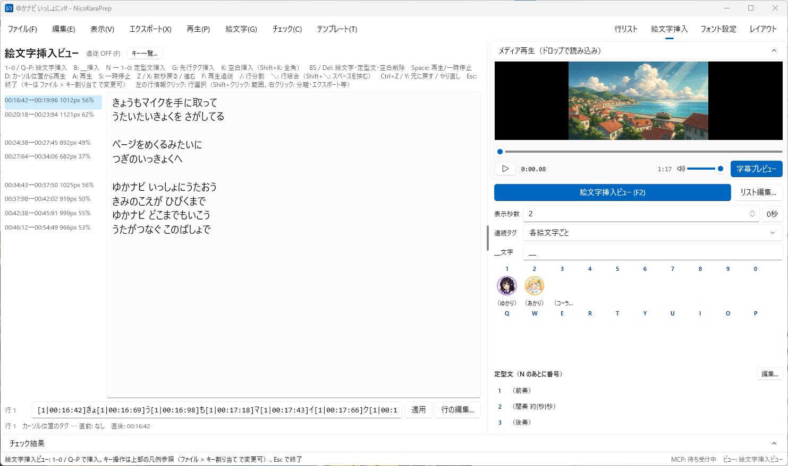
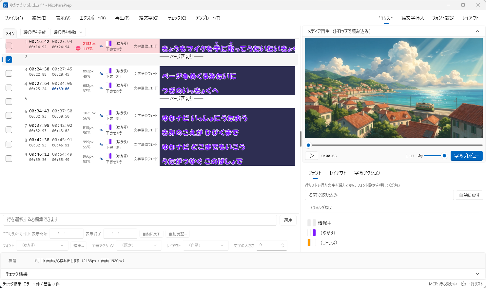
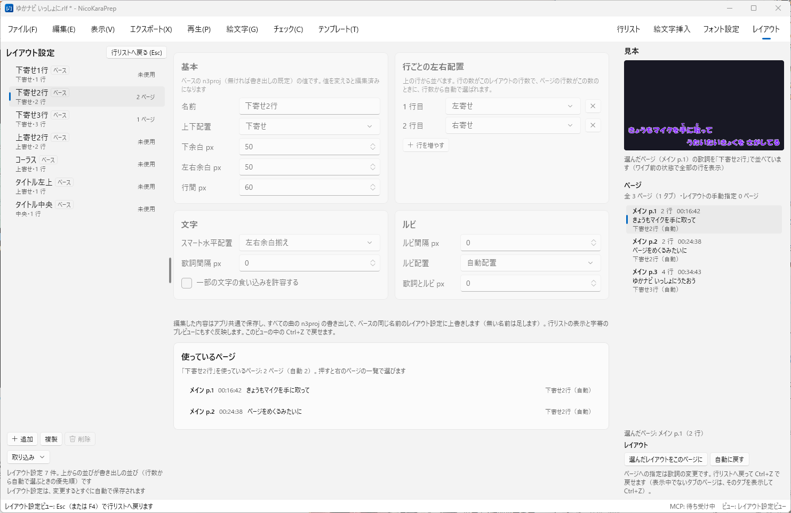
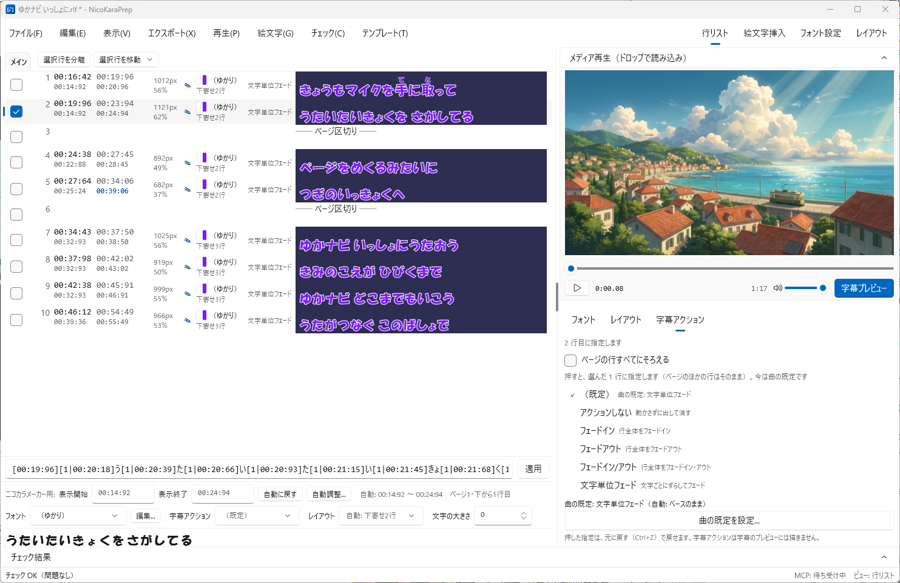
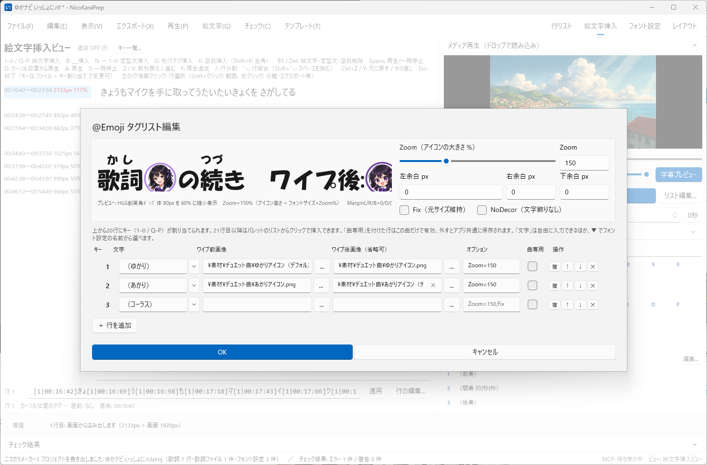
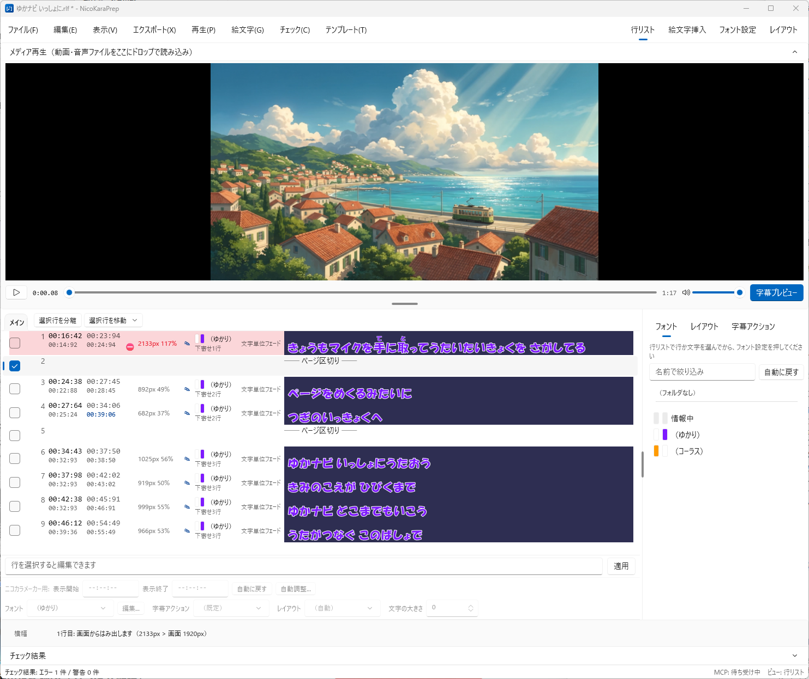

キーボードだけで進む挿入ビュー
歌詞全体を 1 画面に表示し、カーソルを動かしてキーひとつでアイコンを挿入。20 個のアイコンが 1–0 / Q–P に並びます。「（前奏）」「（間奏 約14秒）」「（後奏）」などの定型文も N と番号で入れられます。タイムタグは前後の文字から自動計算されるので、再生に合わせて叩く必要はありません。
YFRTeam presents
RhythmicaLyrics で作ったタイムタグ付き歌詞を、ニコカラメーカー3 向けに仕上げる。ニコカラ制作の「下ごしらえ」専用の Windows アプリです。
Windows 10 / 11（64bit）対応・無料／Microsoft Store で配信中
Microsoft Store から入手できます。更新もストア経由で自動的に届きます。
Microsoft Store で入手インストールせずに使いたい場合は、GitHub Releases の zip を展開して NicoKaraPrep.exe を実行しても同じように使えます。
設定は %APPDATA%\NicoKaraPrep\ に保存され、アプリのフォルダやレジストリは汚しません。
ABOUT THE APP
タイムタグを打ち終えた歌詞をニコカラにするには、1 行が画面からはみ出していないか確かめて行を分け直し、ページをまたいだ字幕の重なりを潰し、必要ならキャラアイコン（@Emoji）を入れる——という地道な作業が続きます。にこぷれっぷは、その一連の作業をひとつの画面にまとめたツールです。
RhythmicaLyrics の編集ファイル（.rlf）をそのまま読み書きできるので、タグの微調整は今まで通り RhythmicaLyrics で。仕上げだけをこのアプリで行う、という使い分けができます。
仕上げた歌詞は、フォント設定・レイアウト・字幕アクション・表示時刻ごと、ニコカラメーカー3 のプロジェクト（.n3proj）として書き出せます。ニコカラメーカー3 で開けば、あとは動画を作るだけです。
FEATURES
歌詞全体を 1 画面に表示し、カーソルを動かしてキーひとつでアイコンを挿入。20 個のアイコンが 1–0 / Q–P に並びます。「（前奏）」「（間奏 約14秒）」「（後奏）」などの定型文も N と番号で入れられます。タイムタグは前後の文字から自動計算されるので、再生に合わせて叩く必要はありません。
1 行の横幅を、字幕と同じフォント・並べ方でピクセル単位に測り、画面からのはみ出しと余白不足を判定します。長すぎる行を分け、短い行をつなぐたびに測り直すので、警告が消えるまでその場で確かめながら整えられます。
ニコカラメーカーが空行で区切る「字幕ページ」を再現し、前のページの行が消える前に次のページの同じ段の行が出てしまう箇所を見つけます。表示時刻はニコカラメーカー3 と同じ計算で求めます。
歌詞・ルビ・アイコン・フォント設定・レイアウト・字幕アクション・行ごとの表示時刻をまとめて .n3proj に書き出し、ニコカラメーカー3 でそのまま開けます。作成済みのプロジェクトを開けば、取り込む項目を確認画面で選んで読み込めます。
ニコカラメーカー3 と同じ規則で各行の表示開始・表示終了を決め、行ごとに手で直せます。アイコンの先行で前のページの行が途中で消えないように遅らせる、同じ段の行を少し重ねてよい、といったニコカラメーカー3 には無い調整もできます。
ニコカラメーカー3 のフォント設定を全項目、広い画面で編集できます（F3）。フォルダ分け、配色パターン、2 人以上で歌う所の組み合わせフォント（ミルフィーユ・グラデーション）の自動作成、見づらい配色の警告、スポイトに対応しています。
ニコカラメーカー3 のレイアウト設定を広い画面で編集し（F4）、ページごとに指定できます。フェードインや文字単位フェードなど 8 種類の字幕アクションも、曲の既定と行ごとに指定して書き出せます。
動画の上に、ニコカラメーカー3 の出力に合わせた並べ方で字幕をワイプ表示します。行リストの歌詞も字幕の見た目で描くので、文字を選んでその文字だけのフォント設定も指定できます。
ファイル > Claude と連携 のボタンひとつで、Claude Desktop・Claude Code から起動中のにこぷれっぷを操作できるようになります。「表示時刻を自動調整して、警告の残る行を教えて」のように頼めます。使うのは登録したときだけで、にこぷれっぷ自体はインターネット通信をしません。
SCREENS










WORKFLOW
RhythmicaLyrics でタイムタグを打ち終えた .rlf をドラッグ＆ドロップします（タイムタグ付きの .lrc も開けます）。
この曲用にフォント・画面サイズを決めた .n3proj を読み込みます。確認画面で、フォント設定・表示時刻・アイコン・動画など、取り込む項目を選べます。同じスタイルで作った別の曲のプロジェクトでも構いません。
ニコカラメーカー3 で作ったプロジェクトを開くと、その歌詞ファイルも一緒に開きます。
動画・音源をパネルへドロップすると、動画の上に字幕のプレビューが重なり、再生位置の行が自動でハイライトされます。行をダブルクリックすると、その時刻へ飛べます。
はみ出しやページ間の重なりが一覧に出ます。クリックで該当行へ飛び、行の分割・結合で警告が消えるまで整えます。
パート分けなどでアイコンを使う曲だけ、F2 の挿入ビューでキーを押して入れていきます。「（間奏 約14秒）」などの定型文も同じビューで入れられます。このビューでも行の分割・結合ができるので、4 の作業をここで続けても構いません。
アイコンの定義はアプリ側に持たせられるので、歌詞ファイルを汚さずに済み、前の曲で使ったアイコンをそのまま使い回せます。
行リストの右のパネルで、選んだ行にフォント設定・レイアウト・字幕アクションを指定します。フォント設定は F3、レイアウト設定は F4 の画面で作れます。表示時刻は 自動調整 で決めてから、気になる行だけ手で直します。
Ctrl+S で rlf のまま保存。ファイル > ニコカラメーカー3 プロジェクトを書き出し で .n3proj に書き出し、ニコカラメーカー3 で開きます。パートごとに行を選び、Ctrl+E で lrc を書き出すこともできます。
REQUIREMENTS
NicoKaraPrep.exe を実行します（必要なランタイムは同梱）INFORMATION